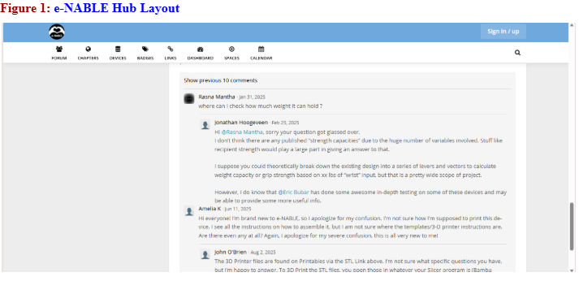
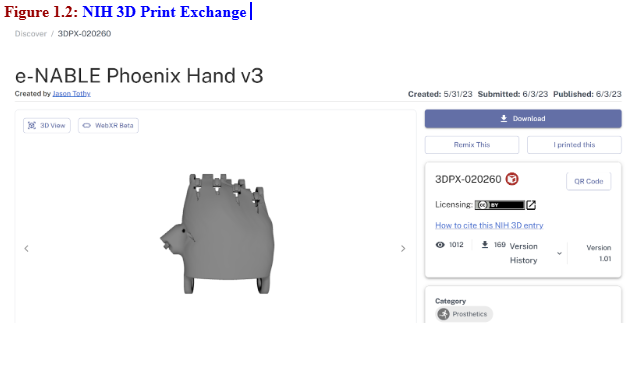
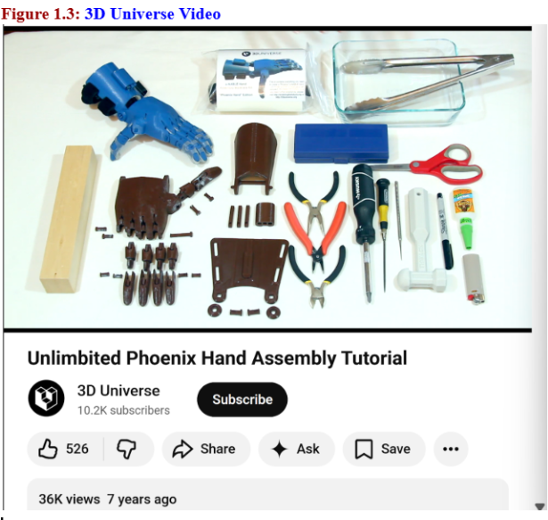

To start building the prosthetic hand my partner and I used several sources like the open-source assistive technology ecosystem, including the e-NABLE Hub, NIH 3D Print Exchange, and Makers Making Change, and we found that each offered different strengths. For instance the e-NABLE Hub felt very community-oriented with forums and shared updates, though its comment-heavy layout can felt cluttered and could benefit from features like collapsible sections or dark mode.See Figure 1.

The NIH 3D Print Exchange was the easiest to navigate for technical content, with a clean layout, direct file access, and helpful tools like a 3D viewer and remixes that show design evolution. However, Makers Making Change stood out for its visual accessibility, showing device images upfront and offering a wider variety of assistive tools beyond prosthetics, making it great for quick browsing and inspiration. See Figure 1.2.

In evaluating the Phoenix Hand V2 assembly video by 3D Universe using the Documentation Literacy Framework, it was highly effective across all areas: easy to find, complete in listing tools and parts, clear for beginners, strong in visual demonstration, and helpful in troubleshooting common mistakes like string tension. It was also accessible to non-English speakers and low-vision users due to clear visuals and descriptive audio.I think the video could be improved by explaining the reasoning behind why certain parts are positioned the way they are and why some steps need to be completed before others.I say this because when my partner and I were assembling the hand, the video instructed us to attach the pointer and ring fingers before the middle finger, but it didn’t explain why that order mattered. We didn’t understand the reasoning at the time—and even after trying it myself by reattaching the fingers in a different order, everything still worked fine.See Figure 1.3. Overall, NIH excelled in technical clarity, e-NABLE in community support, and Makers Making Change in usability and design; ideally, a repository would combine all three by offering a clean visual interface, detailed model pages, community interaction, and accessibility features like filters, dark mode, and multilingual support.
